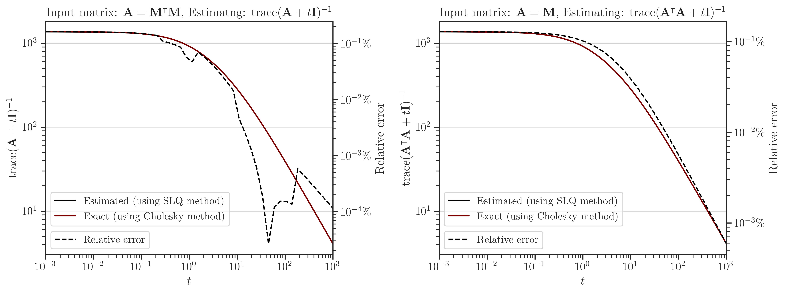

Interpolation of Affine Matrix Functions#
One of the unique and novel features of imate is the ability to interpolate the trace of the arbitrary functions of the affine matrix function \(t \mapsto \mathbf{A} + t \mathbf{B}\). Such an affine matrix function appears in variety of optimization formulations in machine learning. Often in these applications, the hyperparameter \(t\) has to be tuned. To this end, the optimization scheme should compute
for a large number of input hyperparameter \(t \in \mathbb{R}\). See common examples of the function \(f\) in Overview.
Instead of directly computing the above function for every \(t\), imate can interpolate the above function for a wide range of \(t\) with a high accuracy with only a handful number of evaluation of the above function. This solution can enhance the processing time of an optimization scheme by several orders of magnitude with only less than \(1 \%\) error.
Test Description#
The goal of the following numerical experiments is to interpolate the functions
and
for a wide range of \(t \in \mathbb{R}_{> 0}\) where \(\mathbf{A}\) and \(\mathbf{B}\) are symmetric and positive-definite.
Algorithms#
The following Algorithms were tested on Intel® Xeon CPU E5-2670 v3 with 24 threads.
- Cholesky Decomposition#
This method is implemented by the following functions:
imate.logdet(method=’cholesky’) to compute (1).
imate.traceinv(method=’cholesky’) to compute (2).
The complexity of computing (1) for matrices obtained from 1D, 2D, and 3D grids are respectively \(\mathcal{O}(n)\), \(\mathcal{O}(n^{\frac{3}{2}})\), and \(\mathcal{O}(n^2)\) where \(n\) is the matrix size. The complexity of computing (2) for sparse matrices is \(\mathcal{O}(\rho n^2)\) where \(\rho\) is the sparse matrix density.
- Hutchinson Algorithm#
This method is only applied to (2) and implemented by imate.traceinv(method=’hutchinson’) function. The complexity of this method is:
(3)#\[\mathcal{O}(\mathrm{nnz}(\mathbf{A})s),\]where \(s\) is the number of Monte-Carlo iterations in the algorithm and \(\rho\) is the sparse matrix density. In this experiment, \(s = 80\).
- Stochastic Lanczos Quadrature Algorithm#
This method is implemented by:
imate.logdet(method=’cholesky’) to compute (1).
imate.traceinv(method=’cholesky’) to compute (2).
The complexity of this method is:
(4)#\[\mathcal{O} \left( (\mathrm{nnz}(\mathbf{A}) l + n l^2) s \right),\]where \(l\) is the number of Lanczos iterations, and \(s\) is the number of Monte-Carlo iterations. The numerical experiment is performed with \(l=80\) and \(s=200\).
Interpolating Log-Determinant#

Interpolating Trace of Inverse#
How to Reproduce Results#
Run Locally#
Run /imate/benchmark/scripts/affine_matrix_function.py as follows:
cd /imate/benchmark/scripts python ./affine_matrix_function.py -f logdet # for log-determinant python ./affine_matrix_function.py -f logdet -g # for log-determinanrt on Gram matrix python ./affine_matrix_function.py -f traceinv # for trace of inverse python ./affine_matrix_function.py -f traceinv -g # for trace of inverse of Gram matrix
Submit to Cluster with SLURM#
Submit /imate/benchmark/scripts/jobfile_affine_matrix_function.sh by
cd /imate/benchmark/jobfiles sbatch ./jobfile_affine_matrix_function.sh
Plot Results#
Run /imate/benchmark/notebooks/plot_affine_matrix_function.ipynb to generate plots. This notebook stores the plots as svg files in /imate/benchmark/svg_plots/.